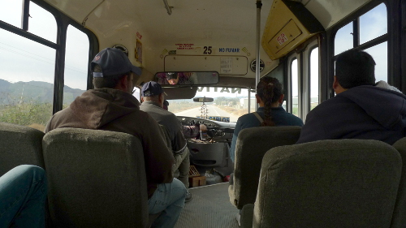

A trip to La Bufadora today, a very rare blowhole at the coast some distance south of Ensenada. To get there, there are serveral options. I chose the most adventurous way: the local minibuses.
In hindsight, I think my Spanish is not quite at the level where I can comfortably get around on my own. In shops and restaurants (or in general: occasions where time is not an important thing to consider and the right words are eventually found) I am usually fine, but communicating in a moving vehicle that is about to speed past the intended but yet unknown stop is a different story. With the help of a Mexcan English teacher who happened to be on the same bus everything worked out allright (as it always does). Getting on the second bus was easy: walk along the road in the right direction and wait for a bus to come. The bus driver gently pushes the horn when he spots people at the side of the road. A simple gesture is all that is needed for him to stop and let you get on and enjoy the Mexican music blasting from the speakers.
La Bufadora itself was (as is to be expected from popular nature phenomena) not quite so spectacular. The water did shoot up a few meters and the thing made some noise, but nothing volcano-like. The high tide probably didn’t help either. This all didn’t spoil the day though, because the 22 kilometer walk back to the first bus change was along a scenic road and mostly beautiful.